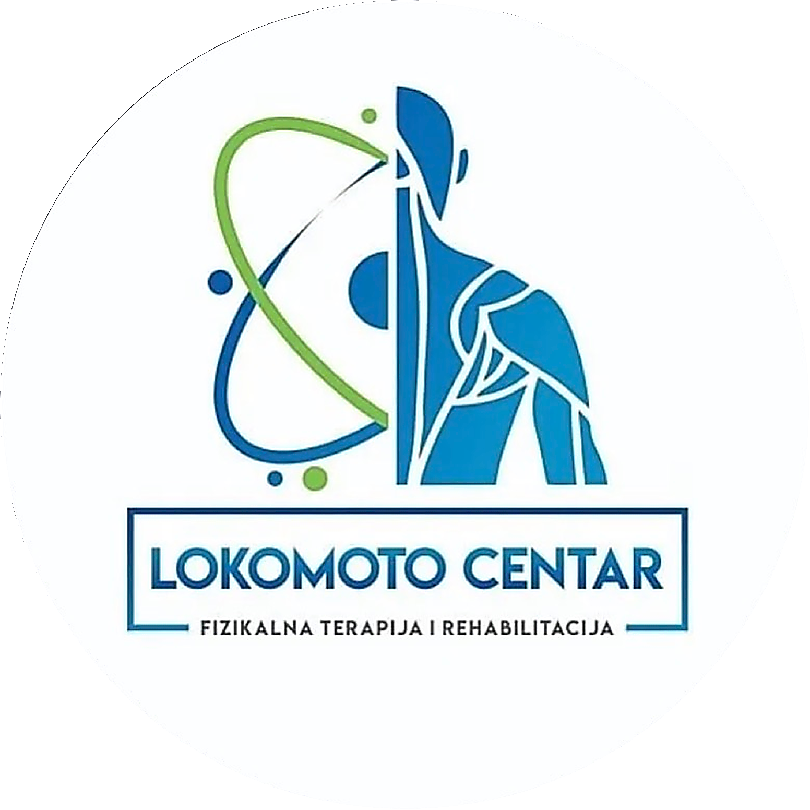

Zvuči poznato?
Problem nije što ne znaš dovoljno tehnika, nego što nemaš sistem koji povezuje procenu sa terapijom.
Procena je da oko 80% ljudi bar jednom u životu ima bol u donjem delu leđa. Svi terapeuti to viđaju stalno.
Vežba nije rešenje.Vežba je alat.
Recept ti daje jedno jelo. Ako znaš da kuvaš, iz istih sastojaka napraviš ono što je potrebno. Ovo nije kurs tehnika, ovo je kurs načina razmišljanja.
Ne učiš listu vežbi za dijagnozu, nego kako da razmišljaš pred pacijentom. Dijagnoza ti kaže šta je, ali ne kaže koliko toga pacijent trenutno može da podnese.
ŠTA DOBIJAŠ NA OVOJ EDUKACIJI?
Šta se menja za 2 dana?
Isto znanje, drugačiji redosled odlučivanja.
Dva dana, dva sloja
Prvi dan procena, drugi dan terapija i primena. Oba dana sa praktičnim radom.

Šta odnosiš sa sobom
Materijali koje koristiš od prvog pacijenta u ponedeljak.
Nije za svakog. I to je poenta.
Maksimalno 20 mesta. Praktičan rad u parovima. Ako želiš da gledaš sa strane, ovo nije za tebe.
Za koga je
Za koga nije

Novak Ilić
Fizioterapeut sa više od 15 godina prakse i vlasnik Lokomoto Centra, specijalizovanog za rehabilitaciju i povratak opterećenju. Sistem koji predaje nastao je iz svakodnevnog rada sa pacijentima sa bolom u donjem delu leđa.
Pristup je jednostavan: procena mora da vodi do odluke, odluka do plana, a plan do opterećenja koje pacijent može da podnese. Ovo nije jedini ispravan pristup, ali je proveren u praksi i može se primeniti odmah.
Verovatno se pitaš
Ovaj kurs ne uči nove tehnike, nego sistem odlučivanja koji povezuje ono što već znaš. Iste tehnike, ali sa jasnim kriterijumom kada se koja koristi.

Grupa je namerno mešovita. Mlađim kolegama sistem daje strukturu od početka, iskusnijima sređuje znanje koje već imaju.
Program pokriva ceo put do šipke, hex bara, kablova i pliometrije, što je povratak sportu. Progresija se ne prekida na traci i bučicama.
Da. Dobijaš gotove obrasce i kriterijume, a izvođenje uvežbavaš na kursu u parovima.
Teorija ide samo koliko treba da objasni odluku. Veliki deo oba dana je praktičan rad.
Detalji
Rezerviši svoje mesto
20 mesta, jedna grupa, 31.10.2026. Prijava se potvrđuje uplatom na račun. Puna refundacija do mesec dana pre datuma.
Autokomanda, Beograd
Prijava za edukaciju
31.10.2026. · Lokomoto Centar, Beograd · 399€. Posle prijave dobijaš instrukcije za uplatu na račun.
Kontaktiramo te u roku od 24 sata sa podacima za uplatu na račun i potvrdom mesta.